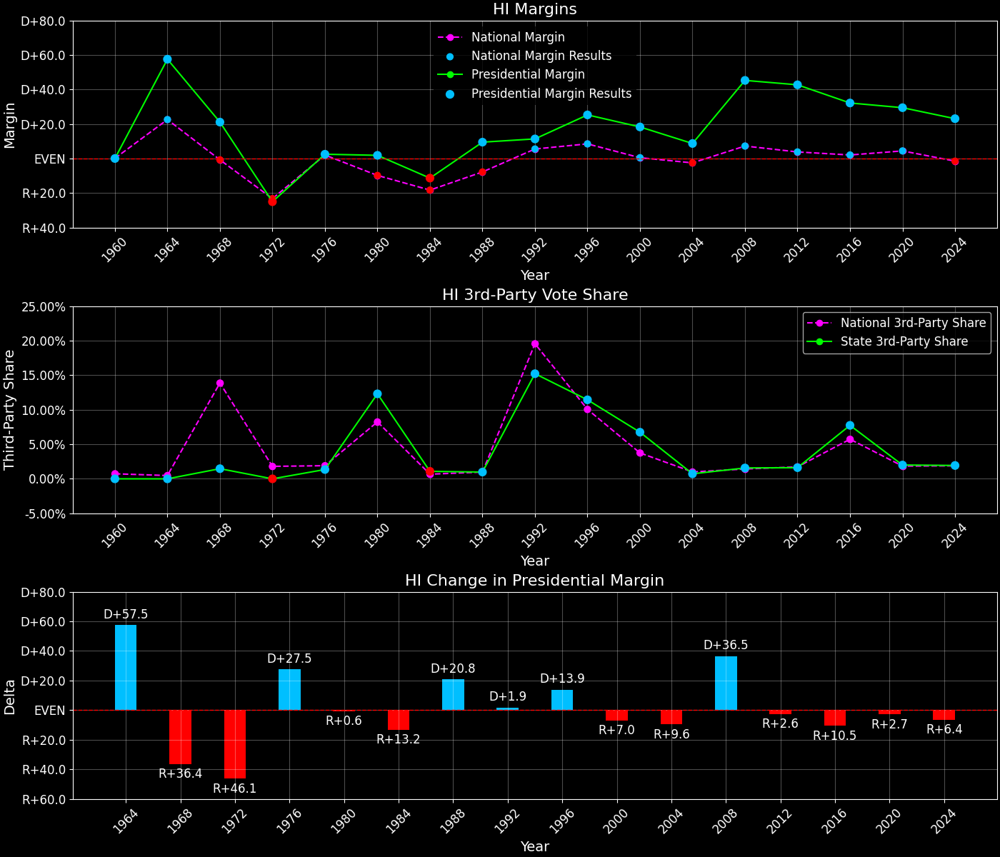
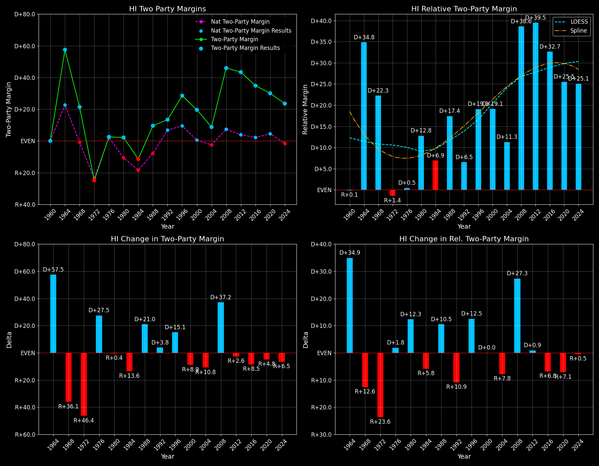

← Back to Map

Margins · 3rd-Party share · Pres. deltas
Relative margins · Relative 3rd-Party · Rel. deltas
Hawaii (HI) — Total Data
| Year | EVs | D | R | State Margin | Nat. Margin | Rel. Margin | Total votes |
|---|
| 1968 | 4 | 140,060(60.2%) | 89,612(38.5%) | D+21.7 | R+0.6 | D+22.3 | 232,780 |
| 1972 | 4 | 101,409(37.5%) | 168,865(62.5%) | R+25.0(Δ R+46.6) | R+23.5(Δ R+23.0) | R+1.4(Δ R+23.7) | 270,274 |
| 1976 | 4 | 147,355(51.3%) | 140,003(48.7%) | D+2.6(Δ D+27.5) | D+2.2(Δ D+25.7) | D+0.4(Δ D+1.8) | 287,358 |
| 1980 | 4 | 135,879(44.8%) | 130,112(42.9%) | D+1.9(Δ R+0.7) | R+9.9(Δ R+12.1) | D+11.8(Δ D+11.4) | 303,287 |
| 1984 | 4 | 147,153(43.8%) | 185,050(55.1%) | R+11.3(Δ R+13.2) | R+18.1(Δ R+8.2) | D+6.8(Δ R+5.0) | 335,845 |
| 1988 | 4 | 192,364(54.3%) | 158,625(44.8%) | D+9.5(Δ D+20.8) | R+7.7(Δ D+10.4) | D+17.3(Δ D+10.4) | 354,461 |
| 1992 | 4 | 179,310(48.1%) | 136,822(36.7%) | D+11.4(Δ D+1.9) | D+5.6(Δ D+13.3) | D+5.8(Δ R+11.4) | 372,842 |
| 1996 | 4 | 205,012(56.9%) | 113,943(31.6%) | D+25.3(Δ D+13.9) | D+8.6(Δ D+3.0) | D+16.7(Δ D+10.9) | 360,124 |
| 2000 | 4 | 205,242(55.7%) | 138,527(37.6%) | D+18.1(Δ R+7.2) | D+0.5(Δ R+8.0) | D+17.6(Δ D+0.9) | 368,497 |
| 2004 | 4 | 231,706(54.0%) | 194,191(45.3%) | D+8.7(Δ R+9.4) | R+2.5(Δ R+3.0) | D+11.2(Δ R+6.4) | 429,011 |
| 2008 | 4 | 325,871(71.8%) | 120,566(26.6%) | D+45.3(Δ D+36.5) | D+7.3(Δ D+9.7) | D+38.0(Δ D+26.8) | 453,568 |
| 2012 | 4 | 306,658(70.5%) | 121,015(27.8%) | D+42.7(Δ R+2.6) | D+3.9(Δ R+3.4) | D+38.8(Δ D+0.8) | 434,697 |
| 2016 | 4 | 266,891(62.2%) | 128,847(30.0%) | D+32.2(Δ R+10.5) | D+2.1(Δ R+1.8) | D+30.1(Δ R+8.8) | 428,937 |
| 2020 | 4 | 366,070(63.7%) | 196,800(34.3%) | D+29.5(Δ R+2.7) | D+4.4(Δ D+2.3) | D+25.0(Δ R+5.1) | 574,359 |
| 2024 | 4 | 313,044(60.6%) | 193,661(37.5%) | D+23.1(Δ R+6.4) | R+1.5(Δ R+6.0) | D+24.6(Δ R+0.4) | 516,701 |
Column explanations
- Δ
- Change (delta) in the value from the previous election year.
- Year
- Election year.
- EVs
- Number of electoral votes allocated to this state or unit.
- D
- Number of votes for the Democratic candidate (raw count(pct%)).
- R
- Number of votes for the Republican candidate (raw count(pct%)).
- State Margin
- Margin between the two major-party candidates, including third-party votes ((D - R)/total).
- Nat. Margin
- The national presidential margin for that year, including third-party votes ((D_total - R_total)/total_votes).
- Rel. Margin
- The presidential margin relative to the national presidential margin (Margin - Nat. Margin).
- Total votes
- Total voter turnout or ballots cast (when provided).
Hawaii (HI) — Third-Party Data
| Year | D | R | Other votes | State 3rd-Party Share | 3rd-Party Nat. Share | 3rd-Party Rel. Share |
|---|
| 1968 | 140,060(60.2%) | 89,612(38.5%) | 3,108(1.3%) | 1.34% | 13.59% | -12.25% |
| 1972 | 101,409(37.5%) | 168,865(62.5%) | 0(0.0%) | 0.00% | 0.09% | -0.09% |
| 1976 | 147,355(51.3%) | 140,003(48.7%) | 0(0.0%) | 0.00% | 0.33% | -0.33% |
| 1980 | 135,879(44.8%) | 130,112(42.9%) | 37,296(12.3%) | 12.30% | 6.98% | 5.32% |
| 1984 | 147,153(43.8%) | 185,050(55.1%) | 3,642(1.1%) | 1.08% | 0.12% | 0.97% |
| 1988 | 192,364(54.3%) | 158,625(44.8%) | 3,472(1.0%) | 0.98% | 0.21% | 0.77% |
| 1992 | 179,310(48.1%) | 136,822(36.7%) | 56,710(15.2%) | 15.21% | 19.23% | -4.02% |
| 1996 | 205,012(56.9%) | 113,943(31.6%) | 41,169(11.4%) | 11.43% | 9.68% | 1.75% |
| 2000 | 205,242(55.7%) | 138,527(37.6%) | 24,728(6.7%) | 6.71% | 3.65% | 3.06% |
| 2004 | 231,706(54.0%) | 194,191(45.3%) | 3,114(0.7%) | 0.73% | 0.84% | -0.11% |
| 2008 | 325,871(71.8%) | 120,566(26.6%) | 7,131(1.6%) | 1.57% | 1.38% | 0.19% |
| 2012 | 306,658(70.5%) | 121,015(27.8%) | 7,024(1.6%) | 1.62% | 1.62% | -0.01% |
| 2016 | 266,891(62.2%) | 128,847(30.0%) | 33,199(7.7%) | 7.74% | 5.54% | 2.20% |
| 2020 | 366,070(63.7%) | 196,800(34.3%) | 11,489(2.0%) | 2.00% | 1.84% | 0.16% |
| 2024 | 313,044(60.6%) | 193,661(37.5%) | 9,996(1.9%) | 1.93% | 1.88% | 0.05% |
Column explanations
- Year
- Election year.
- D
- Number of votes for the Democratic candidate (raw count(pct%)).
- R
- Number of votes for the Republican candidate (raw count(pct%)).
- Other votes
- Number of votes for third-party (other) candidates (raw count(pct%)).
- State 3rd-Party Share
- Share of the vote received by third-party (other) candidates.
- 3rd-Party Nat. Share
- The national third-party share for that year (3rd-Party votes / total votes).
- 3rd-Party Rel. Share
- Third-party share relative to the national third-party share (3rd-Party share - Nat. 3rd-Party share).

Two-party margins · relative · deltas
Hawaii (HI) — Two-Party Data
| Year | EVs | D | R | 2-Party Margin | 2-Party Nat. Margin | 2-Party Rel. Margin |
|---|
| 1968 | 4 | 140,060(61.0%) | 89,612(39.0%) | D+22.0 | R+0.7 | D+22.6 |
| 1972 | 4 | 101,409(37.5%) | 168,865(62.5%) | R+25.0(Δ R+46.9) | R+23.6(Δ R+22.9) | R+1.4(Δ R+24.0) |
| 1976 | 4 | 147,355(51.3%) | 140,003(48.7%) | D+2.6(Δ D+27.5) | D+2.2(Δ D+25.8) | D+0.4(Δ D+1.8) |
| 1980 | 4 | 135,879(51.1%) | 130,112(48.9%) | D+2.2(Δ R+0.4) | R+10.6(Δ R+12.8) | D+12.8(Δ D+12.5) |
| 1984 | 4 | 147,153(44.3%) | 185,050(55.7%) | R+11.4(Δ R+13.6) | R+18.1(Δ R+7.5) | D+6.7(Δ R+6.1) |
| 1988 | 4 | 192,364(54.8%) | 158,625(45.2%) | D+9.6(Δ D+21.0) | R+7.8(Δ D+10.4) | D+17.4(Δ D+10.6) |
| 1992 | 4 | 179,310(56.7%) | 136,822(43.3%) | D+13.4(Δ D+3.8) | D+6.9(Δ D+14.7) | D+6.5(Δ R+10.8) |
| 1996 | 4 | 205,012(64.3%) | 113,943(35.7%) | D+28.6(Δ D+15.1) | D+9.5(Δ D+2.6) | D+19.1(Δ D+12.6) |
| 2000 | 4 | 205,242(59.7%) | 138,527(40.3%) | D+19.4(Δ R+9.1) | D+0.5(Δ R+8.9) | D+18.9(Δ R+0.2) |
| 2004 | 4 | 231,706(54.4%) | 194,191(45.6%) | D+8.8(Δ R+10.6) | R+2.5(Δ R+3.0) | D+11.3(Δ R+7.6) |
| 2008 | 4 | 325,871(73.0%) | 120,566(27.0%) | D+46.0(Δ D+37.2) | D+7.4(Δ D+9.8) | D+38.6(Δ D+27.3) |
| 2012 | 4 | 306,658(71.7%) | 121,015(28.3%) | D+43.4(Δ R+2.6) | D+3.9(Δ R+3.4) | D+39.5(Δ D+0.9) |
| 2016 | 4 | 266,891(67.4%) | 128,847(32.6%) | D+34.9(Δ R+8.5) | D+2.2(Δ R+1.7) | D+32.7(Δ R+6.8) |
| 2020 | 4 | 366,070(65.0%) | 196,800(35.0%) | D+30.1(Δ R+4.8) | D+4.5(Δ D+2.3) | D+25.5(Δ R+7.1) |
| 2024 | 4 | 313,044(61.8%) | 193,661(38.2%) | D+23.6(Δ R+6.5) | R+1.6(Δ R+6.1) | D+25.1(Δ R+0.4) |
Column explanations
- Δ
- Change (delta) in the value from the previous election year.
- Year
- Election year.
- EVs
- Number of electoral votes allocated to this state or unit.
- D
- Number of votes for the Democratic candidate (raw count(pct%)).
- R
- Number of votes for the Republican candidate (raw count(pct%)).
- 2-Party Margin
- Margin between the two major-party candidates, ignoring third-party votes ((D - R)/(D + R)).
- 2-Party Nat. Margin
- The national presidential margin for that year, including third-party votes ((D_total - R_total)/total_votes).
- 2-Party Rel. Margin
- The presidential margin relative to the national presidential margin (Margin - Nat. Margin).